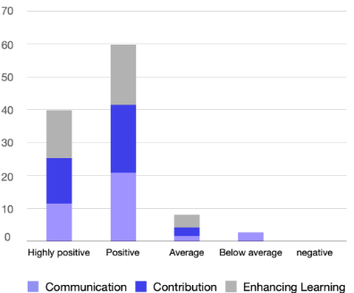

Shy Audience into
Active Contributors
Active Contributors
Lecturer Id : Google account of the lecturer
Chrome / Safari


User Survey

ToSlide. Q&A System (v1.0)

2018.12
홍익대학교 컴퓨터공학과 377명 응답
강사와 학생/청중간 의사소통 향상 75%
학생/청중의 존재감/기여도 향상 76%
학생/청중의 존재감/기여도 향상 76%
ToSlide. Q&A System (v2.0)
2019.7 - 2019.2
국내 6개 학술대회 240명 응답
강사와 학생/청중간 의사소통 향상 86%
학생/청중의 존재감/기여도 향상 84%
학생/청중의 존재감/기여도 향상 84%
ToSlide. Q&A System (v3.0)

2020.6
홍익대학교 컴퓨터공학과 37명 응답
비대면 원격강의 수업에서
강사와 학생/청중간 의사소통 향상 89%
학생/청중의 존재감/기여도 향상 92%
학습효과 향상 89%
강사와 학생/청중간 의사소통 향상 89%
학생/청중의 존재감/기여도 향상 92%
학습효과 향상 89%